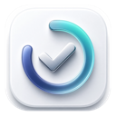
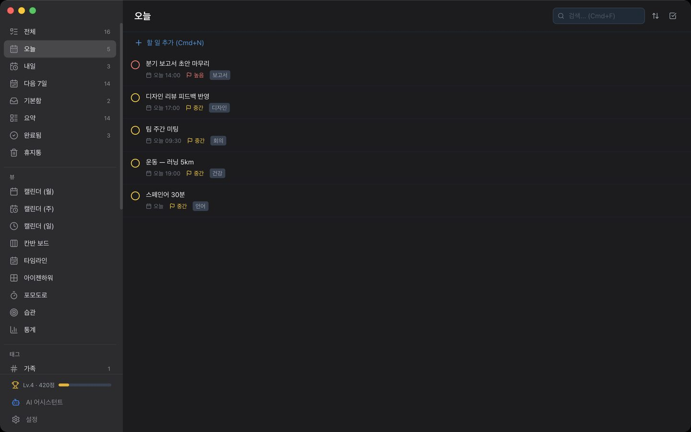
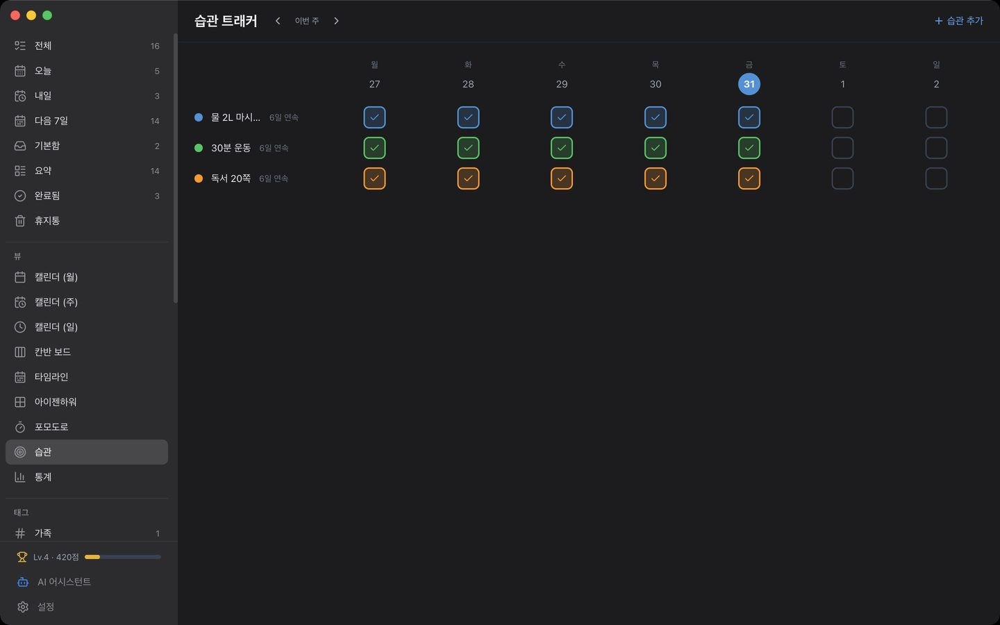
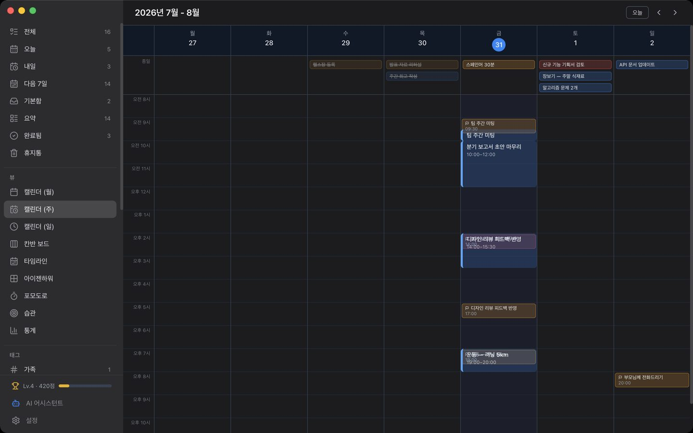
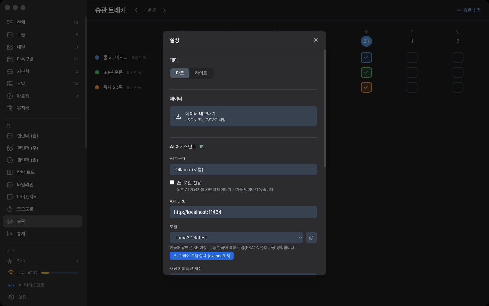
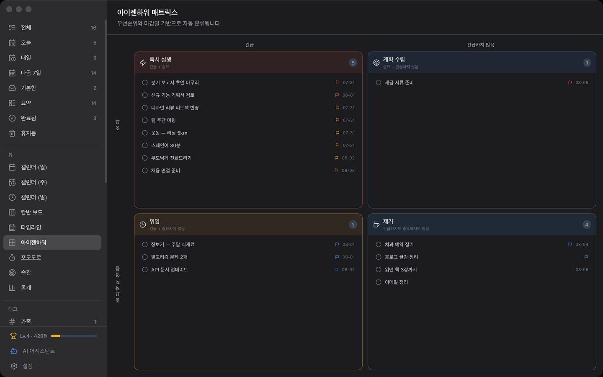

목록
오늘·내일·다음 7일·기본함으로 자동 정리됩니다.

Greenday계정도 로그인도 없습니다. 할 일과 메모는 이 맥에만 저장되고, 어떤 서버로도 올라가지 않습니다.
macOS 12 이상 · 무료

목적에 맞는 화면을 고릅니다. 데이터는 하나입니다.
오늘·내일·다음 7일·기본함으로 자동 정리됩니다.
월·주·일 단위로 보고, 시간 블록으로 일정을 배치합니다.
진행 상태로 옮겨 가며 관리합니다.
며칠에 걸친 작업을 한눈에 봅니다.
중요도와 긴급도 네 칸으로 나눕니다.
완료 추이와 점수를 봅니다.
가입도 로그인도 없습니다. 개발자가 운영하는 서버가 존재하지 않습니다.
할 일을 적는 것과 실제로 하는 것은 다릅니다.


날짜가 있는 할 일을 iCloud나 Google 캘린더에 올리면 폰의 캘린더 앱에 그대로 나타납니다. 연결은 선택이고 기본은 꺼져 있습니다. Greenday가 만든 일정만 다루므로 기존 일정은 읽지도, 건드리지도 않습니다.


설치하고 열면 끝입니다. 만들 계정이 없습니다.